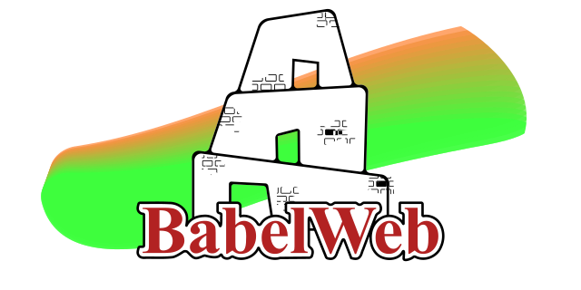

For a polyglot browser to liberate the Web
Why should JavaScript be the only language allowed in the browser? BabelWeb offers a multi-runtime architecture where Python, C#, Rust, and many others can coexist, interact with the DOM, and offer true freedom to developers.
This project is a technological utopia—but every revolution begins with an idea.
Contributors, researchers, dreamers: your ideas, your critiques, and your lines of code are welcome.
MIT—free, open, and unconstrained.
Fork, propose ideas, open issues.
Even a comment can move the revolution forward.
What it could look like:
ü•∞<html> <meta runtime="python" /> <!-- and the dream begins --> </html>